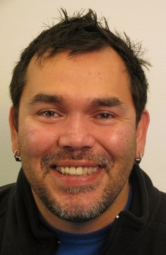

I’m Daniel Kirksey, a SRE with a passion for Learning and New DevOps Technologies.

I take creative approaches to solve complex engineering problems, combining skills and knowledge from a diverse set of fields including infrastructure and software support.
Having worked for both large/startup companies, I always look for a learning environment, where my peers share a similar sense of ownership .